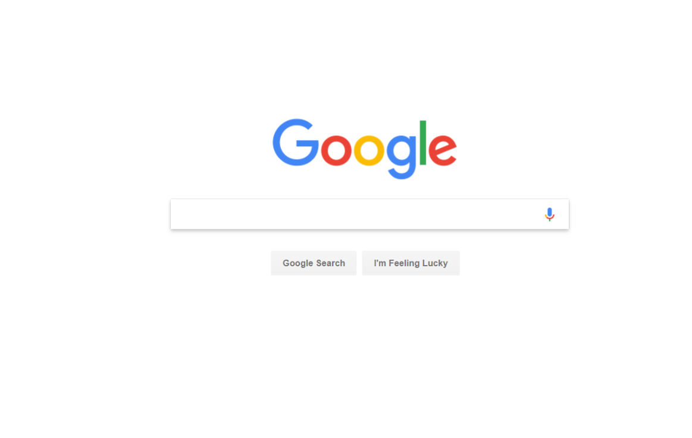
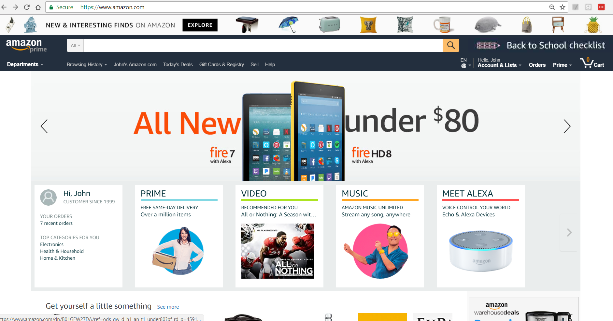

Published: 2017-07-16
When this page first comes up it displays two identical green squares, with the left hand square surrounded by a red frame. If your visual system is like mine, the square on the left appears lighter or brighter than the square without the frame; however, I can assure you they are identical. You can use the controls to change the color of the left hand square, and the square in the middle will change along with it. The two squares are always identical.
In addition, when the page first displays the frame on the left may appear lighter than the frame on the right. Despite any perceived differences, the frame on the left and the frame on the right are identical and remain so when you adjust the color of the frame.
The perception of a color is not absolute but is affected by adjacent colors. This is important to keep in mind when designing a web page or other visual display. A design might specify regions of a particular color at different locations on the page; however, the visual impression created by a color may change depending on the color or colors nearby.
Strong colors engender strong contrast effects. Unless they are very sure of what they are doing designers should use strong colors sparingly. You might come back at me and note that Google's logo involves multiple bright colors. In fact, it uses all four primary colors: red, green, yellow, and blue.
I would counter that Google's logo places these colors in a thin, austere font on a broad white background. Each letter sits in its own space, and the logo is the only color on the page, and the only strong design element on the page. There is no chance that the colorful logo will upset the color scheme. Incidentally, Google's use of a broad, white, empty background is highly radical. You need to go to the Museum of Modern Art in New York City to see similarly masterful uses of empty space. In other words, Google's home page is a work of art, and a masterpiece.
In contrast to Google, Amazon deploys colors that are dark and drab. Very likely this is deliberate as it prevents the website from competing with the products on offer. Amazon's home page is crowded and aggressive. Perhaps its designers are trying to emulate the feel of a large, busy bazaar.
It is remarkable that Google's and Amazon's home pages are esthetic polar opposites, yet each works.
Copyright (C) 2017, John Van Praag